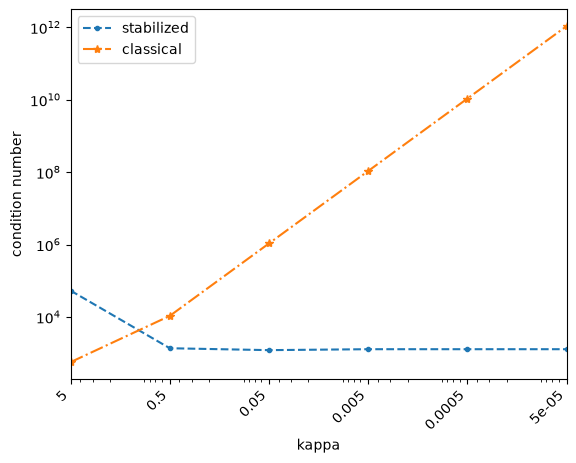

Stabilized Maxwell BEM#
We consider electromagnetic scattering by a perfect conductor \(\Omega \subset \mathbb R^3\). The scattered electric field \(\boldsymbol E\) solves the following exterior boundary value problem:
The electric field \(\boldsymbol E\) is given by
The classical variational formulation is: find \(j\in H^{-\frac12}(\mathrm{div}_\Gamma,\Gamma)\) such that for all \(\phi\in H^{-\frac12}(\mathrm{div}_\Gamma,\Gamma)\)
The classical second order formulation becomes unstable as \(\kappa \to 0\), with condition number \(\mathcal O(\kappa^{-2})\) [Weg11]. In this limit, Gauss’s law is no longer enforced by the formulation.
The stabilized system
has condition number \(\mathcal O(1)\). We solve the discretized system
where \(\phi_k, \phi_l \in H^{-\frac12}(\mathrm{div}_\Gamma, \Gamma)\) and \(\nu_l, \nu_k\in H^{-\frac12}(\Gamma)\)
We achieve a stabilization for the low frequency range at the cost of a larger system of equations. It is important to note that the stabilized system has a one dimensional kernel that must be explicitly considered.
import netgen.meshing as meshing
import numpy as np
from netgen.occ import *
from ngsolve import *
from ngsolve.bem import *
from ngsolve.krylovspace import GMRes
import matplotlib.pyplot as plt
def compute_condition_number(mat, exclude_kernel=False):
"""Compute condition number via SVD."""
s = np.linalg.svd(mat.ToDense(), compute_uv=False)
smallest = s[-2] if exclude_kernel else s[-1]
return s[0] / smallest, s
def solve_stabilized(mesh, kappa, order=1, intorder=4, use_fmm=True):
fes_hdiv = HDivSurface(mesh, order=order, complex=True)
fes_l2 = SurfaceL2(mesh, order=order-1, complex=True, dual_mapping=True)
fes = fes_hdiv * fes_l2
(uHDiv, uL2), (vHDiv, vL2) = fes.TnT()
E_inc = CF((1, 0, 0)) * exp(-1j * kappa * z)
dsi = ds(bonus_intorder=intorder)
with TaskManager():
A_kappa = HelmholtzSL( uHDiv.Trace()*dsi , kappa, use_fmm=use_fmm) * vHDiv.Trace() * dsi
V_kappa = HelmholtzSL( uL2 * dsi , kappa, use_fmm=use_fmm) * vL2 * dsi
Q_kappa = HelmholtzSL( div(uHDiv.Trace())*dsi , kappa, use_fmm=use_fmm) * vL2 * dsi
rhs = LinearForm(E_inc * vHDiv.Trace() * dsi).Assemble()
lhs = A_kappa.mat + Q_kappa.mat + Q_kappa.mat.T + kappa * kappa * V_kappa.mat
preBlock = BilinearForm( uHDiv.Trace() * vHDiv.Trace() * ds + uL2 * vL2 * ds).Assemble().mat.Inverse(freedofs=fes.FreeDofs())
sol = GMRes(A=lhs, b=rhs.vec, pre=preBlock, maxsteps=3000, tol=1e-8, printrates=False)
return lhs, sol, fes, None
def solve_classical(mesh, kappa, order=1, intorder=4, use_fmm=True):
fes = HDivSurface(mesh, order=order, complex=True)
u, v = fes.TnT()
E_inc = CF((1, 0, 0)) * exp(-1j * kappa * z)
rhs = LinearForm(E_inc * v.Trace() * ds(bonus_intorder=10)).Assemble()
j = GridFunction(fes)
dsi = ds(bonus_intorder=intorder)
with TaskManager():
V1 = HelmholtzSL( u.Trace()*dsi , kappa, use_fmm=use_fmm) * v.Trace() * dsi
V2 = HelmholtzSL( div(u.Trace()) * dsi, kappa, use_fmm=use_fmm) * div(v.Trace()) * dsi
V = V1.mat - 1/(kappa**2) * V2.mat
pre = BilinearForm(u.Trace() * v.Trace() * ds).Assemble().mat.Inverse(freedofs=fes.FreeDofs())
success = GMRes(A=V, pre=pre, b=rhs.vec, x=j.vec, tol=1e-10, maxsteps=500, printrates=False)
return V, j, fes, success
def test_low_frequency_stability():
radius = 1
sp = Sphere((0, 0, 0), radius)
mesh = Mesh(OCCGeometry(sp).GenerateMesh(maxh=1, perfstepsend=meshing.MeshingStep.MESHSURFACE)).Curve(4)
order = 1
intorder = 4
use_fmm=False
kappa_values = [5.0, 0.5, 0.05, 0.005, 0.0005, 0.00005]
results_stabilized = []
results_classical = []
for kappa in kappa_values:
try:
A_mat, sol, fes, _ = solve_stabilized(mesh, kappa, order, intorder, use_fmm)
cond, lams = compute_condition_number(A_mat, exclude_kernel=True)
results_stabilized.append((kappa, A_mat, sol, fes, cond, mesh, cond, lams))
A_mat, j, fes, success = solve_classical(mesh, kappa, order, intorder, use_fmm)
cond, lams = compute_condition_number(A_mat)
results_classical.append((kappa, A_mat, j, fes, mesh, success, cond, lams))
except Exception as e:
print("{:10.4f} | Error: {}".format(kappa, e))
return results_stabilized, results_classical
results_stabilized, results_classical = test_low_frequency_stability()
Condition Number#
The condition number of the classical system grows with \(O(\kappa^{-2})\), while the stabilized formulation remains bounded.
kappas_stabilized = []
condition_numbers_stabilized = []
kappas_classical = []
condition_numbers_classical = []
for (rs, rc) in zip(results_stabilized, results_classical):
kappas_stabilized.append(rs[0])
condition_numbers_stabilized.append(rs[6])
kappas_classical.append(rc[0])
condition_numbers_classical.append(rc[6])
plt.xlim(max(kappas_stabilized), min(kappas_stabilized))
plt.loglog(kappas_stabilized, condition_numbers_stabilized, "--", marker=".", label="stabilized")
plt.loglog(kappas_classical, condition_numbers_classical, "-.", marker="*", label="classical")
xs = np.unique(np.r_[kappas_stabilized, kappas_classical])
plt.xticks(xs, [f"{x:g}" for x in xs], rotation=45, ha="right")
plt.legend()
plt.xlabel("kappa")
plt.ylabel("condition number")
plt.show()

References (theoretical and numerical results):